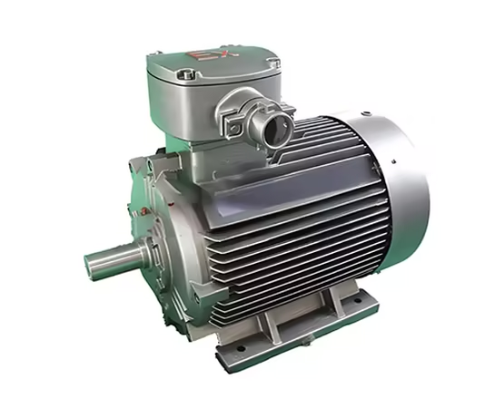

一、产品概述与技术特点
1. 产品定位与适用范围
YBK3系列防爆型三相异步电动机是专为煤矿井下恶劣工作环境设计的专用电机。其防爆标志为ExdⅠ Mb，适用于含有瓦斯或煤尘的煤矿井下采掘工作面及其他含有爆炸性气体混合物存在的危险场所。
该系列电机在YBK2防爆电机的基础上，结合当前国内先进的电磁技术研制而成，具有高效、节能、寿命长、性能好、噪音低、防爆结构先进等显著优点。电机的机座采用钢板焊接成形，风罩、接线盒、绝缘结构均采取加强措施，能够适应煤矿井下恶劣的工作条件。
2. 核心技术特点
YBK3系列电动机融合了多项创新技术，具有显著的性能优势：
高效的防爆设计：电机的隔爆结构先进，当电动机内部爆炸性混合物爆炸时，隔爆外壳不会损坏或产生影响隔爆性能的变形，内部爆炸火焰不会通过隔爆接合面引起外部爆炸
优异的效率表现：电动机效率指标符合GB18613-2012《中小型三相异步电动机能效限定值及能效等级》 中2级能效指标，并与IEC60034-30的IE3效率等级相当，节能效果显著
坚固的机械结构：电动机外壳防护等级达到IP55，能够有效防止灰尘、水分进入电机内部，绝缘等级为F级，定子绕组温升裕度大，寿命长
二、技术参数与性能指标
YBK3系列防爆型三相异步电动机具有全面的技术优势，以下是其主要技术参数：
表：YBK3系列电动机主要技术参数
| 参数类别 | 技术规格与性能指标 |
|---|---|
| 机座号范围 | H80～H355 |
| 额定电压 | 380V、660V、1140V、380/660V、660/1140V |
| 额定频率 | 50Hz |
| 防护等级 | IP55 |
| 绝缘等级 | F级 |
| 冷却方式 | IC411（全封闭自扇冷式） |
| 工作制 | S1（连续工作制） |
| 防爆标志 | ExdⅠ Mb |
| 安装形式 | IMB3、IMB5、IMB35 |
性能特征说明
YBK3系列电动机在防爆安全、运行性能和能源效率等方面均表现出色：
高效节能：电动机效率符合GB18613-2012标准中的2级能效要求，与国际IE3效率等级相当，能有效降低运行能耗
低噪音低振动：采用优化设计和精密制造工艺，电动机运行平稳，转子和轴承系统经过特殊优化，振动和噪音显著低于传统防爆电机
宽电压适应性：提供多种电压规格，能够在煤矿井下不同的电网环境下保持稳定性能
三、结构设计与配置
1. 电机主体结构
YBK3系列防爆型三相异步电动机采用专业化防爆设计，每个部件都经过精心设计和优化：
防爆外壳设计：电机隔爆外壳的零件如机座、端盖、轴承内盖、接线盒盖、接线盒座等，精加工后须经1.5Mpa，持续时间至少为10S的静压试验，实验结果以不滴水和外壳未产生影响防爆型式的永久性变形或损坏为合格
散热结构优化：采用机座带平行与垂直散热筋的全封闭自扇冷结构，风扇采用防静电塑料材料，其转动惯量小，损耗低，风罩为钢板结构，在防止一定大小的外物侵入的前提下得到最大面积的通风量，散热性能良好
防爆接线盒设计：接线盒位于电动机顶部，盒内有较大的空腔便于接线，并且还留有安置电缆头的空腔。进线方式有橡套电缆、铠装电缆、钢管布线、挠性联接管，接线盒内设六个接线端子
2. 内部核心组件
YBK3系列电动机的内部结构经过精心设计和优化，确保高效安全运行：
定子结构：定子绕组采用高强度聚酯漆包圆铜线，并经VPI真空加压浸漆处理，使之成为一个完整的整体，绕组绝缘具有良好的电气、机械、防潮性能及热稳定性
转子设计：转子采用铸铝结构，转子经校正动平衡，电动机运转平稳，振动值小。定、转子冲片采用高导磁、低损耗优质电工硅钢片，电机损耗低，效率高
轴承系统：轴承用YBK3防爆电机专用低震动、低噪声轴承。机座号132以下采用双面密封轴承，在轴伸端装用波形弹簧垫圈，以适度压靠轴承。机座号160以上采用内外盖结构，并在轴承部位挡圈轴向固定，有效地防止电机转子的轴向串动。轴承部位安装有注排油装置，可不停机加轴承润滑脂
四、应用领域与场景
YBK3系列防爆型高效率三相异步电动机凭借其可靠的防爆性能和高效节能的特点，在煤矿行业得到广泛应用：
1. 煤矿井下设备
采掘设备：用于煤矿井下采掘工作面机械的驱动，是专门为这些设备设计的专用电机
固定设备：适用于煤矿井下的固定设备，如泵类、通风设备等
运输机械：用于煤矿井下的输送机、提升机等设备，提供可靠的防爆动力
2. 适用环境条件
YBK3系列电动机对工作环境有明确的适应范围：
环境温度：周围空气最低为-15℃，最高为35℃（煤矿井下）
海拔高度：安装海拔不超过1000m
湿度条件：环境空气最大相对湿度不超过95%（当温度为25℃时）
电源条件：电压波动±5%（短时允许波动±10%）以内；频率波动±2%（短时允许波动±5%）以内
五、产品优势与价值
1. 安全可靠性
YBK3系列防爆型三相异步电动机在安全性方面具有明显优势：
可靠的防爆性能：严格按照国家防爆标准设计制造，防爆结构先进，确保在爆炸性环境中的安全运行。连接隔爆外壳的螺栓均装有弹簧垫圈，防止自行松脱，且紧固件的适应力大于或等于640Mpa
高质量材料与制造：关键部件采用优质材料和精密制造工艺，确保电机长期稳定运行。在额定工作状态下，电动机外壳最高表面温度不得超过+150℃，进线口外的温度不得高于所用电缆的允许温度
全面的安全保护：根据用户需要可以提供定子测温、轴承测温、定子防潮等保护装置，H160及以上电机可提供不停机加油装置，进一步提高运行安全性
2. 高效节能效益
YBK3系列电动机具有显著的经济效益：
降低运行成本：高效率设计可显著减少能耗，缩短投资回收期。电动机的额定功率范围从0.75kW到315kW，满足不同功率需求
优化能源利用：电动机具有较高的功率因数和效率，提高电网质量，减少无功补偿设备投资
全生命周期成本低：虽然初始投资可能略高，但运行期间的节能效益和低维护成本使全生命周期成本大幅降低
3. 维护便利性
该系列电机在设计上充分考虑了维护的便利性：
便于维护的结构设计：合理的结构设计使日常检查、维护和检修工作更为便捷。轴承部位安装有注排油装置，可不停机加轴承润滑脂
模块化设计：关键部件采用模块化设计，降低维护难度和备件库存
长寿命设计：采用F级绝缘系统，按B级考核温升，温升裕度大，设计寿命长，维护周期长
六、安装与使用指南
1. 安装环境要求
YBK3系列防爆型三相异步电动机对安装环境有明确要求：
环境条件：适用于含有瓦斯或煤尘的煤矿井下环境，特别是采掘工作面
海拔高度：安装海拔不超过1000m（高海拔电机除外）
安装位置：电动机的主接线盒位于机座顶部，可以左右旋转满足用户不同出线方式的要求
2. 安装与调试
正确的安装与调试是保证电机安全运行的关键：
基础要求：需要坚固平整的基础，能够承受电机的重量和运行时的机械应力
传动方式：允许采用弹性联轴器、正齿轮及皮带轮传动
旋转方向：顺时针（默认）、逆时针（订单需说明）
启动方式：直接启动、Y/△启动、降压启动、变频启动等多种启动方式可选
七、服务与技术支持
1. 质量保证体系
YBK3系列防爆型三相异步电动机的生产制造遵循严格的质量标准：
标准符合性：产品严格遵循GB 755-2008《旋转电机定额和性能》、GB 3836系列防爆标准及其他相关标准要求
认证齐全：除符合国家标准外，也符合IEC79-1，BS4683和EN50018的规定
严格的检测流程：在制造过程中经过多项严格的测试，确保产品性能符合标准要求
2. 售后服务承诺
供应商为客户提供全面的售后服务保障：
专业技术支持：提供产品选型、安装指导的专业咨询服务
快速响应：客户在使用过程中如发现质量问题，供应商会及时响应
持续服务：为客户提供长期的技术支持和服务保障
YBK3系列煤矿井下用防爆型三相异步电动机凭借其卓越的防爆性能、高效的节能特性和可靠的运行表现，已成为煤矿井下危险环境工业动力领域的理想解决方案。通过持续的技术创新和严格的质量控制，确保每一台YBK3系列防爆型三相异步电动机都能在严苛的煤矿环境下提供安全、稳定、高效的动力支持。
选择YBK3系列煤矿井下用防爆型三相异步电动机，就是选择可靠的安全保障和完善的技术服务。我们期待与您合作，共同推动煤矿行业的安全生产与节能技术进步。
型号意义 MODEL MEANING
YBK3-315S-2W
| Y | 异步电动机Asynchronous Motor |
| B | 隔爆型Explosion-Proof Type |
| K | 矿用Coal Mine |
| 3 | 优化设计序列号Redesign Code |
| 315 | 电动机轴中心高（315mm）Shaft Centre Height (315 mm) |
| S | 机座长度Frame Length |
| 2 | 极数（2极）No. of Poles (2) |
| W | 环境代号，默认缺省时为户内（其余如：W-户外、F1/F2-户内防腐、TH-湿热带、WF1/WF2-户外防腐等）Ambient code, defaulted is indoor. (Special requirements: W - outdoor, F1/F2 - indoor anti-corrosion, TH - hot and humid tropics type, WF1/WF2 - outdoor and anti-corrosion, etc.) |
技术数据 TECHNICAL DATA
| 型号Type | 额定功率kW | 额定电流A | 额定转速r/min | 效率Efficiency % | 功率因数Power Factor cosφ | 堵转转矩Locked Torque | 堵转电流Locked Current | 最大转矩Max. Torque | 额定转矩Rated Torque N·m | 转动惯量Moment of Inertia kg·m² | 空载噪声No-load Noise dB(A) | 质量Weight kg |
|---|---|---|---|---|---|---|---|---|---|---|---|---|
| 额定转矩Rated Torque | 额定电流Rated Current | 额定转矩Rated Torque | ||||||||||
| 同步转速 3000 r/min | ||||||||||||
| YBK3-132S1-2 | 5.5 | 10.9 | 2920 | 87.0 | 0.88 | 2.2 | 8.0 | 2.3 | 18 | 0.01 | 79 | 78 |
| YBK3-132S2-2 | 7.5 | 14.5 | 2920 | 88.1 | 0.89 | 2.2 | 7.8 | 2.3 | 24 | 0.02 | 79 | 82 |
| YBK3-160M1-2 | 11 | 21.0 | 2940 | 89.4 | 0.89 | 2.2 | 7.9 | 2.3 | 35 | 0.05 | 81 | 165 |
| YBK3-160M2-2 | 15 | 28.4 | 2940 | 90.3 | 0.89 | 2.2 | 8.0 | 2.3 | 48 | 0.06 | 81 | 175 |
| YBK3-160L-2 | 18.5 | 34.7 | 2940 | 90.9 | 0.89 | 2.2 | 8.1 | 2.3 | 59 | 0.07 | 81 | 189 |
| YBK3-180M-2 | 22 | 41.1 | 2960 | 91.3 | 0.89 | 2.2 | 8.2 | 2.3 | 70 | 0.11 | 83 | 240 |
| YBK3-200L1-2 | 30 | 55.7 | 2965 | 92.0 | 0.89 | 2.2 | 7.5 | 2.3 | 96 | 0.16 | 84 | 310 |
| YBK3-200L2-2 | 37 | 68.3 | 2965 | 92.5 | 0.89 | 2.2 | 7.5 | 2.3 | 118 | 0.19 | 84 | 330 |
| YBK3-225M-2 | 45 | 82.7 | 2965 | 92.9 | 0.89 | 2.2 | 7.6 | 2.3 | 143 | 0.27 | 86 | 363 |
| YBK3-250M-2 | 55 | 100.7 | 2970 | 93.2 | 0.89 | 2.2 | 7.6 | 2.3 | 175 | 0.39 | 89 | 516 |
| YBK3-280S-2 | 75 | 136.5 | 2975 | 93.8 | 0.89 | 2.0 | 6.9 | 2.3 | 239 | 0.69 | 91 | 625 |
| YBK3-280M-2 | 90 | 163.3 | 2975 | 94.1 | 0.89 | 2.0 | 7.0 | 2.3 | 287 | 0.82 | 91 | 680 |
| YBK3-315S-2 | 110 | 199.1 | 2975 | 94.3 | 0.89 | 1.9 | 7.1 | 2.2 | 350 | 1.58 | 92 | 1030 |
| YBK3-315M-2 | 132 | 238.2 | 2975 | 94.6 | 0.89 | 1.9 | 7.1 | 2.2 | 420 | 1.78 | 92 | 1160 |
| YBK3-315L1-2 | 160 | 288.1 | 2975 | 94.8 | 0.89 | 1.9 | 7.1 | 2.2 | 509 | 2.04 | 92 | 1220 |
| YBK3-315L2-2 | 200 | 359.4 | 2975 | 95.0 | 0.89 | 1.9 | 7.1 | 2.2 | 637 | 2.27 | 92 | 1240 |
| YBK3-355M2-2 | 250 | 444.3 | 2980 | 95.0 | 0.90 | 1.8 | 7.1 | 2.2 | 796 | 3.27 | 100 | 1815 |
| YBK3-355L2-2 | 315 | 559.8 | 2980 | 95.0 | 0.90 | 1.8 | 7.1 | 2.2 | 1003 | 4.03 | 100 | 1975 |
| 同步转速 1500 r/min | ||||||||||||
| YBK3-132S-4 | 5.5 | 10.9 | 1460 | 87.7 | 0.82 | 2.0 | 7.5 | 2.3 | 35 | 0.03 | 71 | 87 |
| YBK3-132M-4 | 7.5 | 14.5 | 1460 | 88.7 | 0.83 | 2.0 | 7.4 | 2.3 | 48 | 0.04 | 71 | 97 |
| YBK3-160M-4 | 11 | 21.0 | 1470 | 89.8 | 0.85 | 2.0 | 7.5 | 2.3 | 70 | 0.10 | 73 | 165 |
| YBK3-160L-4 | 15 | 28.4 | 1470 | 90.6 | 0.85 | 2.0 | 7.5 | 2.3 | 96 | 0.13 | 73 | 184 |
| YBK3-180M-4 | 18.5 | 34.7 | 1475 | 91.2 | 0.86 | 2.0 | 7.7 | 2.3 | 118 | 0.18 | 76 | 232 |
| YBK3-180L-4 | 22 | 41.1 | 1475 | 91.6 | 0.86 | 2.0 | 7.8 | 2.3 | 140 | 0.21 | 76 | 246 |
| YBK3-200L-4 | 30 | 55.7 | 1475 | 92.3 | 0.87 | 2.0 | 7.2 | 2.3 | 191 | 0.33 | 76 | 325 |
| YBK3-225S-4 | 37 | 68.3 | 1480 | 92.7 | 0.87 | 2.0 | 7.3 | 2.3 | 236 | 0.57 | 78 | 378 |
| YBK3-225M-4 | 45 | 82.7 | 1480 | 93.1 | 0.87 | 2.0 | 7.4 | 2.3 | 287 | 0.64 | 78 | 403 |
| YBK3-250M-4 | 55 | 100.7 | 1480 | 93.5 | 0.88 | 2.0 | 7.4 | 2.3 | 350 | 0.80 | 79 | 536 |
| YBK3-280S-4 | 75 | 136.5 | 1485 | 94.0 | 0.88 | 2.0 | 7.0 | 2.3 | 478 | 1.65 | 80 | 665 |
| YBK3-280M-4 | 90 | 163.3 | 1485 | 94.2 | 0.89 | 2.0 | 7.0 | 2.3 | 573 | 2.01 | 80 | 740 |
| YBK3-315S-4 | 110 | 199.1 | 1485 | 94.5 | 0.89 | 2.0 | 7.0 | 2.2 | 700 | 3.33 | 88 | 1060 |
| YBK3-315M-4 | 132 | 238.2 | 1485 | 94.7 | 0.89 | 2.0 | 7.0 | 2.2 | 840 | 3.71 | 88 | 1180 |
| YBK3-315L1-4 | 160 | 288.1 | 1485 | 94.9 | 0.89 | 2.0 | 7.0 | 2.2 | 1019 | 4.31 | 88 | 1250 |
| YBK3-315L2-4 | 200 | 359.4 | 1485 | 95.1 | 0.89 | 2.0 | 7.0 | 2.2 | 1273 | 5.12 | 88 | 1350 |
| YBK3-355M2-4 | 250 | 444.3 | 1490 | 95.1 | 0.89 | 2.0 | 7.0 | 2.2 | 1592 | 8.51 | 95 | 1847 |
| YBK3-355L2-4 | 315 | 559.8 | 1490 | 95.1 | 0.89 | 2.0 | 7.0 | 2.2 | 2006 | 10.54 | 95 | 2025 |
| 同步转速 1000 r/min | ||||||||||||
| YBK3-132S-6 | 3 | 7.4 | 970 | 83.3 | 0.74 | 2.0 | 6.2 | 2.1 | 29 | 0.04 | 69 | 73 |
| YBK3-132M1-6 | 4 | 9.7 | 970 | 84.6 | 0.74 | 2.0 | 6.8 | 2.1 | 38 | 0.05 | 69 | 87 |
| YBK3-132M2-6 | 5.5 | 13.0 | 970 | 86.0 | 0.75 | 2.0 | 7.1 | 2.1 | 53 | 0.07 | 69 | 97 |
| YBK3-160M-6 | 7.5 | 16.8 | 975 | 87.2 | 0.78 | 2.1 | 7.0 | 2.1 | 72 | 0.12 | 73 | 165 |
| YBK3-160L-6 | 11 | 24.2 | 975 | 88.7 | 0.79 | 2.1 | 7.0 | 2.1 | 105 | 0.15 | 73 | 189 |
| YBK3-180L-6 | 15 | 31.4 | 980 | 89.7 | 0.81 | 2.0 | 7.2 | 2.1 | 143 | 0.27 | 73 | 231 |
| YBK3-200L1-6 | 18.5 | 38.4 | 980 | 90.4 | 0.81 | 2.1 | 7.2 | 2.1 | 177 | 0.39 | 73 | 295 |
| YBK3-200L2-6 | 22 | 44.8 | 980 | 90.9 | 0.82 | 2.1 | 7.3 | 2.1 | 210 | 0.45 | 73 | 310 |
| YBK3-225M-6 | 30 | 61.4 | 985 | 91.7 | 0.81 | 2.0 | 7.1 | 2.1 | 287 | 0.39 | 74 | 363 |
| YBK3-250M-6 | 37 | 72.6 | 985 | 92.2 | 0.84 | 2.1 | 7.1 | 2.1 | 353 | 0.71 | 76 | 501 |
| YBK3-280S-6 | 45 | 85.8 | 990 | 92.7 | 0.86 | 2.1 | 7.2 | 2.0 | 430 | 1.04 | 78 | 610 |
| YBK3-280M-6 | 55 | 104.4 | 990 | 93.1 | 0.86 | 2.1 | 7.2 | 2.0 | 525 | 2.17 | 78 | 690 |
| YBK3-315S-6 | 75 | 143.1 | 990 | 93.7 | 0.85 | 2.0 | 7.0 | 2.0 | 716 | 3.92 | 83 | 990 |
| YBK3-315M-6 | 90 | 173.2 | 990 | 94.0 | 0.84 | 2.0 | 7.0 | 2.0 | 860 | 4.42 | 83 | 1100 |
| YBK3-315L1-6 | 110 | 208.5 | 990 | 94.3 | 0.85 | 2.0 | 7.0 | 2.0 | 1051 | 5.51 | 83 | 1195 |
| YBK3-315L2-6 | 132 | 246.5 | 990 | 94.6 | 0.86 | 2.0 | 7.0 | 2.0 | 1261 | 6.81 | 83 | 1310 |
| YBK3-355S-6 | 160 | 294.7 | 990 | 94.8 | 0.87 | 1.9 | 7.0 | 2.0 | 1528 | 9.81 | 85 | 1735 |
| YBK3-355M2-6 | 200 | 367.7 | 990 | 95.0 | 0.87 | 1.9 | 7.0 | 2.0 | 1910 | 12.15 | 85 | 1890 |
| YBK3-355L2-6 | 250 | 459.6 | 990 | 95.0 | 0.87 | 1.9 | 7.0 | 2.0 | 2388 | 15.65 | 85 | 2125 |
| 同步转速 750 r/min | ||||||||||||
| YBK3-132S-8 | 2.2 | 6.0 | 710 | 77.9 | 0.71 | 1.8 | 6.0 | 2.0 | 28 | 0.03 | 64 | 75 |
| YBK3-132M-8 | 3 | 7.9 | 710 | 78.9 | 0.73 | 1.8 | 6.0 | 2.0 | 38 | 0.04 | 64 | 85 |
| YBK3-160M1-8 | 4 | 10.4 | 720 | 79.9 | 0.73 | 1.9 | 6.0 | 2.0 | 51 | 0.07 | 68 | 150 |
| YBK3-160M2-8 | 5.5 | 13.8 | 720 | 82.0 | 0.74 | 1.9 | 6.0 | 2.0 | 70 | 0.09 | 68 | 165 |
| YBK3-160L-8 | 7.5 | 18.1 | 720 | 84.0 | 0.75 | 1.9 | 6.0 | 2.0 | 96 | 0.13 | 68 | 185 |
| YBK3-180L-8 | 11 | 25.8 | 730 | 86.4 | 0.75 | 1.9 | 6.5 | 2.0 | 140 | 0.21 | 70 | 229 |
| YBK3-200L-8 | 15 | 34.5 | 730 | 86.9 | 0.76 | 1.9 | 6.6 | 2.0 | 191 | 0.36 | 70 | 285 |
| YBK3-225S-8 | 18.5 | 41.5 | 730 | 89.1 | 0.76 | 1.9 | 6.6 | 2.0 | 236 | 0.54 | 73 | 318 |
| YBK3-225M-8 | 22 | 47.8 | 730 | 89.6 | 0.78 | 1.9 | 6.6 | 2.0 | 280 | 0.64 | 73 | 338 |
| YBK3-250M-8 | 30 | 63.8 | 730 | 90.4 | 0.79 | 1.9 | 6.5 | 2.0 | 382 | 0.97 | 75 | 466 |
| YBK3-280S-8 | 37 | 78.3 | 735 | 90.9 | 0.79 | 1.8 | 6.6 | 2.0 | 471 | 1.61 | 76 | 600 |
| YBK3-280M-8 | 45 | 94.7 | 735 | 91.4 | 0.79 | 1.8 | 6.6 | 2.0 | 573 | 1.85 | 76 | 665 |
| YBK3-315S-8 | 55 | 113.2 | 740 | 92.3 | 0.80 | 1.8 | 6.6 | 2.0 | 700 | 3.93 | 82 | 960 |
| YBK3-315M-8 | 75 | 152.8 | 740 | 93.2 | 0.80 | 1.8 | 6.4 | 2.0 | 955 | 5.38 | 82 | 1140 |
| YBK3-315L1-8 | 90 | 182.8 | 740 | 93.5 | 0.80 | 1.8 | 6.4 | 2.0 | 1146 | 6.40 | 82 | 1215 |
| YBK3-315L2-8 | 110 | 218.0 | 740 | 93.5 | 0.82 | 1.8 | 6.4 | 2.0 | 1401 | 7.51 | 82 | 1295 |
| YBK3-355S-8 | 132 | 261.6 | 740 | 93.5 | 0.82 | 1.8 | 6.4 | 2.0 | 1681 | 11.82 | 89 | 1705 |
| YBK3-355M-8 | 160 | 315.4 | 740 | 94.0 | 0.82 | 1.8 | 6.4 | 2.0 | 2037 | 14.42 | 89 | 1845 |
| YBK3-355L2-8 | 200 | 388.6 | 740 | 94.2 | 0.83 | 1.8 | 6.4 | 2.0 | 2547 | 18.74 | 89 | 2070 |
| 同步转速 600 r/min | ||||||||||||
| YBK3-315S-10 | 45 | 100.0 | 590 | 91.2 | 0.75 | 1.3 | 6.2 | 2.0 | 716 | 3.93 | 82 | 950 |
| YBK3-315M-10 | 55 | 121.4 | 590 | 91.8 | 0.75 | 1.3 | 6.2 | 2.0 | 875 | 4.78 | 82 | 1085 |
| YBK3-315L1-10 | 75 | 162.4 | 590 | 92.3 | 0.76 | 1.3 | 6.2 | 2.0 | 1194 | 6.40 | 82 | 1200 |
| YBK3-315L2-10 | 90 | 191.4 | 590 | 92.8 | 0.77 | 1.3 | 6.2 | 2.0 | 1433 | 7.51 | 82 | 1275 |
| YBK3-355M1-10 | 110 | 230.4 | 590 | 93.0 | 0.78 | 1.3 | 6.0 | 2.0 | 1751 | 11.84 | 90 | 1690 |
| YBK3-355M2-10 | 132 | 275.6 | 590 | 93.3 | 0.78 | 1.3 | 6.0 | 2.0 | 2101 | 14.44 | 90 | 1830 |
| YBK3-355L1-10 | 160 | 334.0 | 590 | 93.3 | 0.78 | 1.3 | 6.0 | 2.0 | 2547 | 17.91 | 90 | 2015 |
注：表中电动机质量为理论计算值，与实际值有一定偏差，仅供参考，电动机重量以实际称重为准。